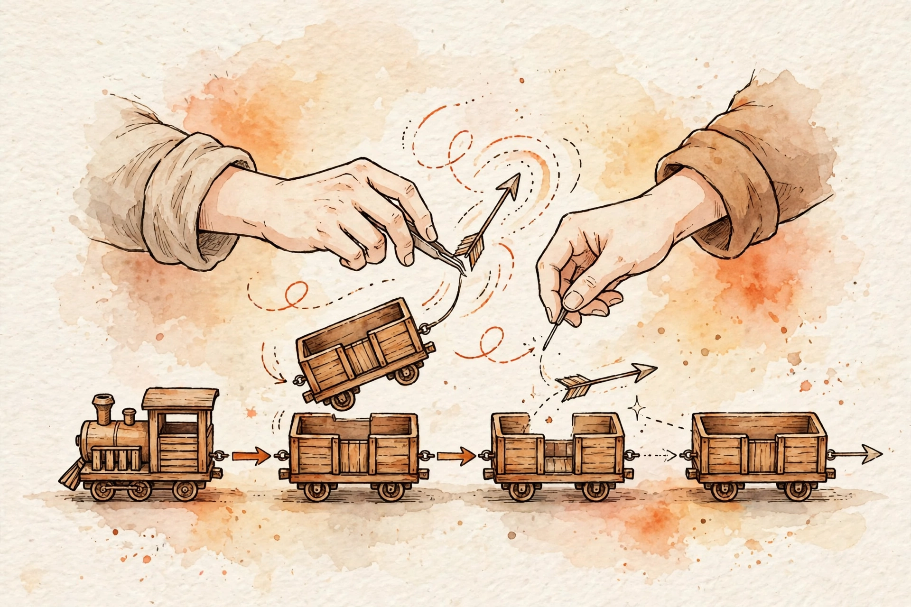

Wednesday, September 30, 2026
Arrays were a parking row — cheap to find, expensive to rearrange. Linked lists are a train: expensive to walk, cheap to re-couple. This lesson flips L1's contiguity bargain, derives the flipped cost table, and drills the three-pointer reversal, the dummy-node trick, and merge-two-sorted.

Builds on: L1 (Arrays: The Foundation) — the exact idea reused
is the contiguity bargain: indexing is address arithmetic (base + i × w), so
a[i] is Θ(1); changing the middle shifts everything after it, so it costs
Θ(n−k). Today's structure inverts both halves: nodes scattered through memory mean
no arithmetic — reaching node k is k pointer hops, Θ(n) — while splicing at a node you
already hold is two pointer writes, Θ(1), with nothing to shift. The L7 complexity vocabulary
prices every claim in this lesson.
A parking row (the array) numbers every slot: slot 37 is 37 steps from the gate, always. A train has no slot numbers — each car holds cargo and one coupling to the next car. To reach the 37th car you board the engine and walk through 36 couplings. That is the entire data structure: a node is data + one pointer, and a head pointer is your only way in.
The inversion is the whole point. Arrays: cheap reads (arithmetic), expensive splices (shifting). Linked lists: expensive reads (walking), cheap splices (rewiring). Neither is "better" — the workload decides. Mostly random access? The array wins. Mostly cutting and inserting at positions you already know — merging two sorted lists, rearranging — the train wins.
One more piece before the math: the dummy node. The head of a train is
special — no car sits before it to hold the coupling, so every operation needs an "insert/delete
at head" special case. The dummy node kills the special case: park an empty engine in front of
the train, do all surgery relative to it, and return dummy.next as the new head.
Uniform code, no edge-case branch — and it is the move in half of all linked-list
interviews.
Three derivations. First, indexing. Array:
address = base + k × w, one multiplication and one memory access → Θ(1). Linked
list: each hop dereferences a pointer to find the next address, which is inherently
sequential — you cannot skip ahead because nothing tells you where node k+1 lives until you read
node k. Reaching node k costs k hops → Θ(n) worst case. There is no address arithmetic because
there is no contiguity.
Second, splice at a known node. Deleting node X from a train: wire its
predecessor P around it, P.next = X.next — two pointer writes, Θ(1); the rest of the
train never moves. The array version shifts n−k−1 elements — Θ(n) data movement. Same operation,
flipped costs: linked list Θ(1) where the array paid Θ(n). The price of admission was losing
Θ(1) indexing to get here.
Third, in-place reversal. Iterative: three pointers
(prev, curr, nxt); each step visits one node and does
constant work → Θ(n) time, and the extra space is three pointers → O(1). Recursive: same visits,
but every call holds a stack frame until the recursion unwinds → Θ(n) extra space — and Python's
default recursion limit is 1000, so a longer list crashes outright. Elegant on the whiteboard,
lethal in production. The interview answer is iterative.
| Operation | Array (Python list) | Linked list | Why |
|---|---|---|---|
| Get k-th element | Θ(1) | Θ(n) | arithmetic vs. walking couplings |
| Insert/delete at a known position | Θ(n) | Θ(1) | shifting the tail vs. two pointer writes |
| Insert/delete at the head | Θ(n) | Θ(1) | insert(0) shifts all; train just re-hooks the engine |
| Traverse everything | Θ(n) | Θ(n) | same bound — but arrays win on cache locality |
| Reverse in place | Θ(n) | Θ(n) | both O(1) extra space |
| Search by value | Θ(n) | Θ(n) | linear either way — no shortcut exists |
Two problems carry the linked-list interviews. First, reversing the train — in-place, three pointers, and the ordering of three lines is the entire trick:
class ListNode:
def __init__(self, val=0, next=None):
self.val = val
self.next = next
def reverse_list(head):
# Save BEFORE you sever: overwriting curr.next first
# orphans the rest of the train. Each node visited
# once -> Theta(n) time; three pointers -> O(1)
# extra space. LC 206.
prev, curr = None, head
while curr:
nxt = curr.next # 1. stash the coupling ahead
curr.next = prev # 2. rewire: point backward
prev = curr # 3. advance both pointers
curr = nxt
return prev # the last car is the new engine
Second, merging two sorted trains — the dummy node does its flagship work, and notice this is mergesort's merge step wearing a linked-list costume (L9 previews it):
def merge_two_lists(l1, l2):
# The dummy absorbs every head special case: the answer
# is dummy.next no matter what happened at the front.
# tail always points at the last car of the merged train.
# Theta(n+m) time, O(1) extra space. LC 21.
dummy = tail = ListNode()
while l1 and l2:
if l1.val <= l2.val:
tail.next, l1 = l1, l1.next
else:
tail.next, l2 = l2, l2.next
tail = tail.next
tail.next = l1 or l2 # splice the survivor whole
return dummy.next
curr.next = prev before nxt = curr.next orphans the tail — the #1 linked-list bug, and it corrupts silently: no IndexError to save you.head = head.next inside a helper changes nothing for the caller unless you return the new head. Return dummy.next.curr, not curr.next. while curr.next skips the last car; always check the pointer you are about to dereference.l1 or l2 splices the whole survivor. The remainder is already linked — walking it node by node is wasted work.dummy.next; never include dummy.val.L15 (Fast & slow pointers — Floyd's cycle detection runs on the trains you can now build), L23 (LRU cache — a doubly-linked list plus a hash map; today's Θ(1) splice is the entire reason that design works), L30 (Merge k sorted lists — today's merge, generalized with a heap from L28), L8 (Recursion — reread reversal recursively once, to feel the Θ(n) stack), L5 (Hash maps — paired with lists in LRU: O(1) lookup plus O(1) splice is the combo).
— The Infra Notebook